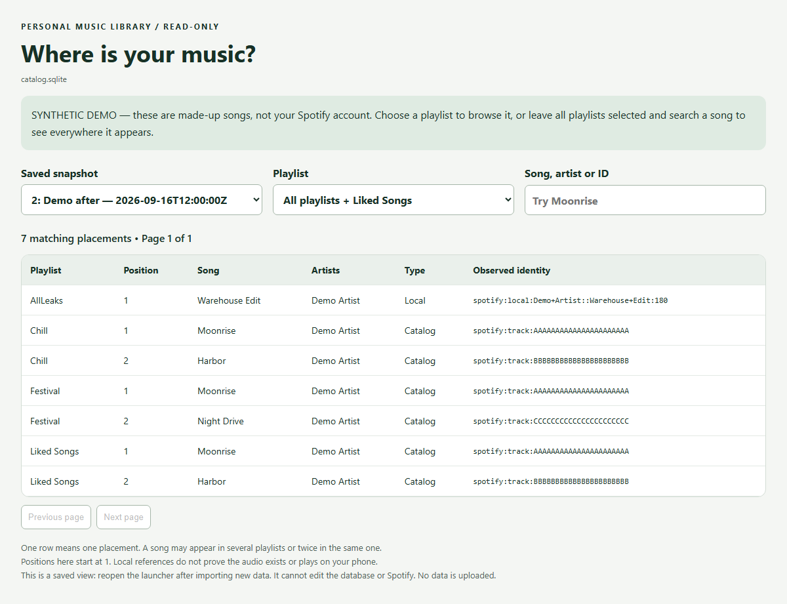
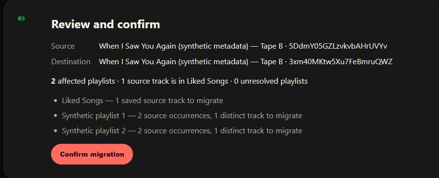

Backend systems
Modernize legacy Java applications and build Spring Boot services with RabbitMQ and PostgreSQL for asynchronous workflows.
Software engineer / Metro Detroit, MI
I’m a software engineer at General Motors. Since 2022, I’ve worked on Java/Spring Boot services, enterprise integrations, and developer workflows.
I like turning messy requirements into tools people can understand and use, from engineering systems at work to music projects on my own time. I’m especially interested in integration, technical discovery, and helping people adopt new tools.
Professional background
Engineering, integration, and the people using the tools.Software Engineer
February 2022–present
Metro Detroit, Michigan
Modernize legacy Java applications and build Spring Boot services with RabbitMQ and PostgreSQL for asynchronous workflows.
Connect Java services with C++/Qt engineering applications. Translate stakeholder requirements into reusable processing tools.
Support containerized development with Docker and Podman, troubleshoot OpenShift deployments, and create API and onboarding documentation.
My work spans implementation, requirements discovery, troubleshooting, and technical handoffs across engineering, QA, and infrastructure teams.
Selected personal projects
All repositoriesMusic is a recurring starting point: collections get messy, APIs have limits, and useful tools need to survive the next run. I develop these projects with AI assistance, iterating on the workflows, tests, and documented limitations.
Local catalogs & data exploration
A collection you can inspect and keep.
Each playlist placement is evidence. The catalog keeps source, position, snapshot history, local-track references, and gaps in coverage instead of flattening everything into a list of song IDs.
Richer recording matching and DJ-oriented enrichment remain future work.

Explore union, intersection, and difference with fictional tracks. This example runs entirely in your browser.
Illustrative demo · Fictional tracks · No account or API calls

API integration & recovery
Duplicate placements are preserved. Replacements are added and verified before old tracks are removed. Unknown coverage blocks confirmation; a partial removal failure can leave both versions present because Spotify has no transaction across playlists.
A small command-line example
python soundcloud_downloader.py --helpDocumented CLI options from the public repository.
Automation & everyday workflows
Source quality is reported separately from output format. Converting a file cannot restore quality missing from its source. Existing history remains useful across repeat runs.
A little more context
B.S. in Computer Science
Minor in Business
Graduated
December 2021
I like understanding the whole problem.
That includes the code, the data, the person using the tool, and the explanation that helps the next person pick it up.
At work, that means collaborating across engineering, QA, and infrastructure. In my personal projects, it means turning questions about a music collection into tools I can inspect, test, and improve.
I’m interested in the connection between hands-on engineering and practical technical solutions: APIs, systems integration, clear documentation, and helping people use what gets built.
Professional profile on LinkedInGet in touch
For opportunities, project questions, or a technical conversation.